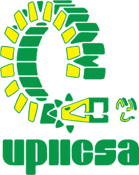

Visualizador de Locomotora
Usa el mouse para rotar, scroll para acercar/alejar y click derecho para mover.
Mostrar/Ocultar puntos interactivos
Regresar al inicio
¿Que es Ingenieria Ferroviaria?
Plan de estudios UPIICSA